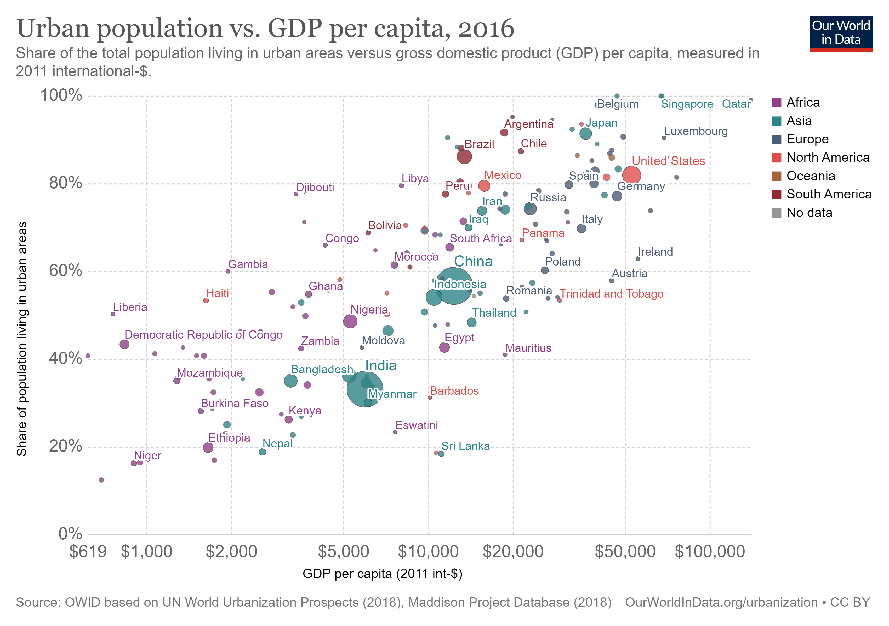

Change in Percentage of People Living in Urban Areas (1960-2017)
Housing, hunger, employment, water, climate change...
All of these issues are impacted not only by population growth, but by the way and places in which people choose to live. Since 2007, more than half of the world population lives in cities, and those cities are growing increasingly dense. In fact, the United Nations estimates that by 2050, two-thirds of the world population will live in cities.
Data suggests overall this trend toward urbanization is tied to an increase in GDP as people come together to realize the economic benefits of trade, diverse work forces and modern infrastructure. That being said, an estimated 1 in 3 people in urban areas live in slum households, with Sub-Saharan Africa having the highest percentage of households living in slums. You can clearly see that urban growth in Sub-Saharan Africa over the past sixty years in the map above
In most countries, however, the share of urban population living in slums has decreased in recent decades. For example, between 1990 and 2014, the percentage of slum households decreased from 44% to 25% in China, from 55% to 24% percent in India, from 37% to 22% in Brazil, and from 77% to 50% in Nigeria.
The data for this project was made available from "Our World in Data," a clearinghouse for information created by University of Oxford researcher Max Roser. The goal of "Our World In Data" is to document slow but transformative changes in the world over time. They highlight that despite much negative reporting on the human condition, there has in fact been good progress in many area, such as reduction of extreme poverty. While acknowledging there is work to be done to improve health, hunger, climate change and many other issues, they state:
"We think this ignorance about global development matters. Constant doom saying and the failure to report the accomplishment of our efforts is nurturing cynicism. It is especially sad when those who care about the development of our world turn away as they see no information on global development that would give them hope."
Map Data Source: United Nations Population Division. World Urbanization Prospects: 2018 Revision / Forward/reverse button credit: Noun Project, "Skip" by Samuele Bandini, IT In the Light UI Elements Collection